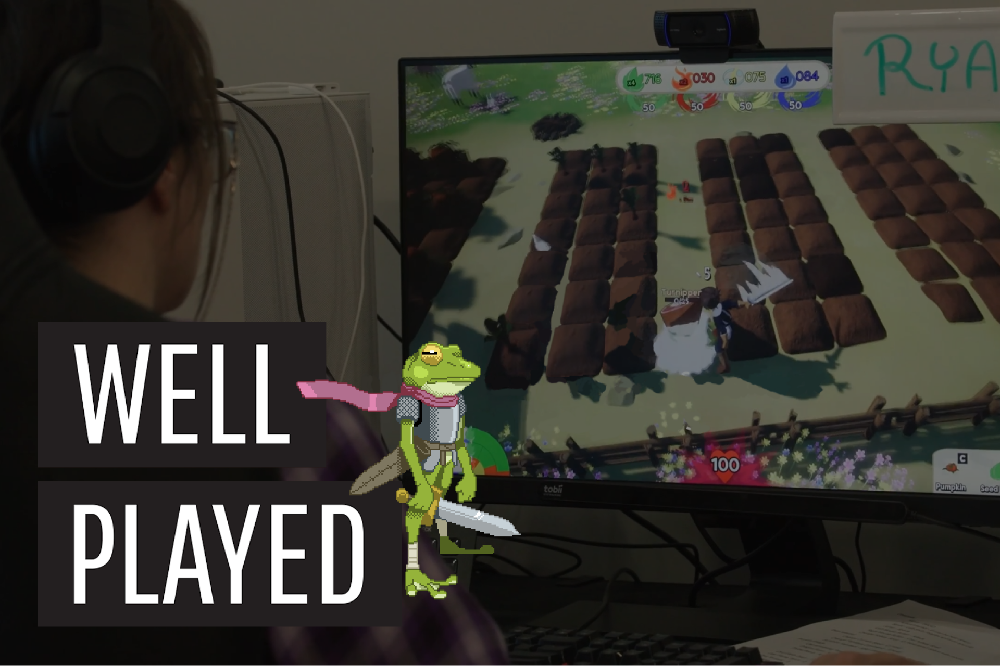

A UX researcher completing my masters in HCI at Georgia Tech seeking roles in tech and games
I'm Spencer Luke, a UX researcher with a background in HCI. I leverage my experience in tech UI/UX, game playtests, and academic research to advocate for the user and create human-centered experiences.
Last at:
UXR Intern @ Google
Attending:
Georgia Tech
Home:
Atlanta, Georgia
Case Studies

Gemini and Agentic Tools

World Cup Transit Experience
MARTA

AI-Powered Accessibility in Gaming
Georgia Tech

Think Aloud Playtest
Well Played Research